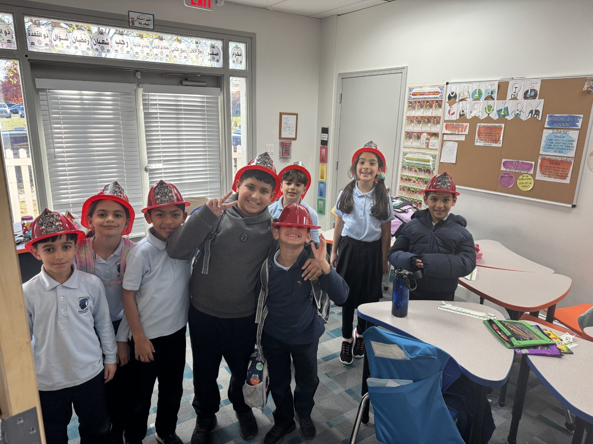
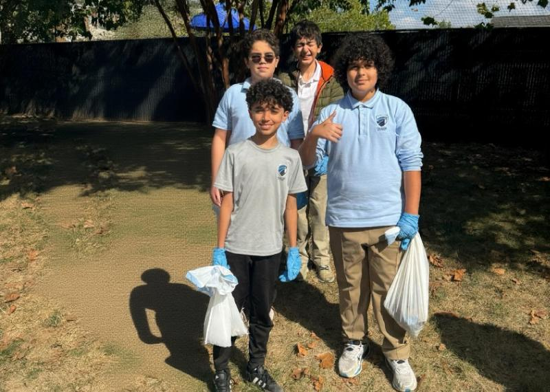

Social Studies
History, geography and how communities work.
Called Individuals & Societies in Grades 6–8 (IB Middle Years Programme).

- Grades
- KG – G12
- G6–G8
- Individuals and Societies (IB)
- AP
- World History, US Government
- AP
- Macroeconomics, Microeconomics
Social Studies (elementary school) and Individuals & Societies (middle school) teach how people, places and societies work, and where students fit in. Lessons follow the three-dimensional model of teaching and learning (concepts, skills, and content) and build critical thinking.
Primary Years KG – G5
In the Classroom
- Drawing maps
- Community walks
- Role-play
- Artifact analysis
- Family interviews
Social Studies is taught through the transdisciplinary themes, with students learning by asking questions. Topics include families and communities, geography and environments, cultures and traditions, basic economics, timelines and history, and citizenship. Students also learn basic American history and geography: national symbols, key historical figures, U.S. holidays, states and regions, and what government and community helpers do.
Read moreShow less
Lessons center on big ideas like change, connection, identity, systems, and responsibility, so young children can link their lives to the wider world. They explore real questions through role-play, storytelling, artifact analysis, community walks, and group projects.
They practice mapping, putting events in order, research, seeing other points of view, and communication. Lessons are adjusted to each child’s level. Students show what they learned by drawing maps, writing simple reports, or interviewing family and community members.
Middle Years G6 – G8
Sample Projects
Individuals & Societies goes deeper into history, geography, economics, sociology, civics, and global politics, often mixing them. Students study cause and effect, globalization, equity, sustainability, and human systems, linking past, present, and future.
Read moreShow less
American history and geography get special focus: Indigenous cultures, colonization, the American Revolution, the U.S. Constitution and government, civil rights movements, westward expansion, and U.S. regions. Students study these next to world history and global issues so they can compare.
Units on ancient civilizations, environmental challenges, migration patterns, economic choices, and governance show how people lived across times and places.
Students build skills step by step in critical reading, academic writing, source analysis, reading data, argument, and ethical reasoning. Classes are active and student-centered, with debates, simulations, research projects, case studies, Model UN sessions, digital storytelling, fieldwork, and community action projects.
Students are assessed along the way (formative) and at the end of units (summative), through real tasks such as historical investigations, position papers, comparative essays, presentations, reflective journals, infographics, and multimedia campaigns. Ongoing checks guide feedback, and final assessments show how well students understand and can use what they learned.
In elementary and middle school, students look at real issues from more than one point of view. They learn to make informed decisions, think about others, and take action in their community.
High School G9 – G12
In high school, students can take AP World History, AP US Government, AP Macro/Microeconomics, and college-level political science.
High School Courses ›Inside the Classroom


Who Teaches It
See Social Studies in a Real Classroom
Tours run Sundays at Ashburn and Saturdays at Chantilly. Bring your child and your questions.